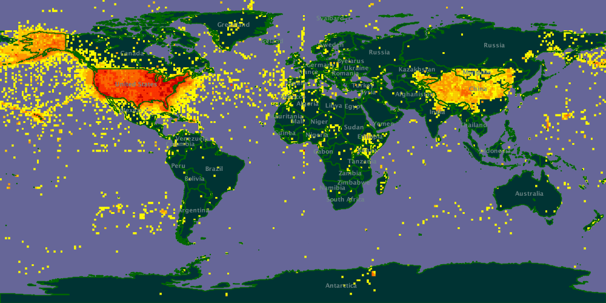

library(tidyverse) # general data wrangling6. Geocoordinates
df <- read.csv('example_data/geocoordinates_example.csv')Many of the tricks in module 4 also apply here, but sometimes there is no substitute for a map. We can make a basic map using ggplot.
# create data for world coordinates using map_data() function
world_coordinates <- map_data("world")
# create world map using ggplot() function
ggplot() +
# to make it not complain about x,y undefined
geom_blank(data=world_coordinates, aes(x=long, y=lat)) +
geom_map(
data = world_coordinates,
map = world_coordinates,
aes(
map_id = region),
color = "white", fill = "blue", linewidth = 0.2
)+
geom_point(
data = df,
aes(long, lat),
alpha = 1, color = 'orange'
) +
# legend.position as none removes the legend
theme(legend.position="none") 
Or make an interactive map using leaflet - this allows you to pan around imagery and see where on the ground those points really are.
# helpful examples here https://waterdata.usgs.gov/blog/basemaps/
# attribution text to display in the map using HTML
att <- paste0(
"<a href='https://www.usgs.gov/'>",
"U.S. Geological Survey</a> | ",
"<a href='https://www.usgs.gov/laws/policies_notices.html'>",
"Policies</a>"
)
GetURL <- function(service, host = "basemap.nationalmap.gov") {
sprintf("https://%s/arcgis/services/%s/MapServer/WmsServer", host, service)
}
leaflet::leaflet() %>%
leaflet::addWMSTiles(., GetURL("USGSImageryTopo"),
group = "USGS Imagery Topo", attribution = att, layers = "0"
) %>%
leaflet::addCircles(.,
data = df,
lng = ~ long, lat = ~ lat,
color = ~ 'orange',
radius = 20000,
stroke = TRUE,
opacity = 5,
weight = 1,
fillOpacity = 1)PhantomJS not found. You can install it with webshot::install_phantomjs(). If it is installed, please make sure the phantomjs executable can be found via the PATH variable.
You may ask yourself - did I sample in Asia? If not, quite likely some of your longitudes are lacking the sign convention to tell you that they are sampled in the western hemisphere. If you have done this, you are not alone! For example, can you see the “mirror image” of the US species occurrence records here in the raw data submitted to GBIF?

Images courtesy of the developers at GBIF, who have corrected this problem. You can read more about it here.